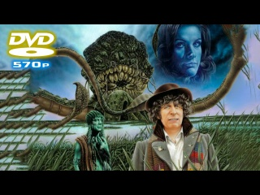
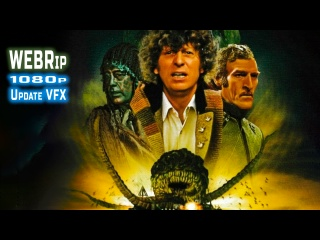
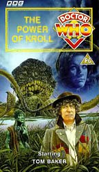
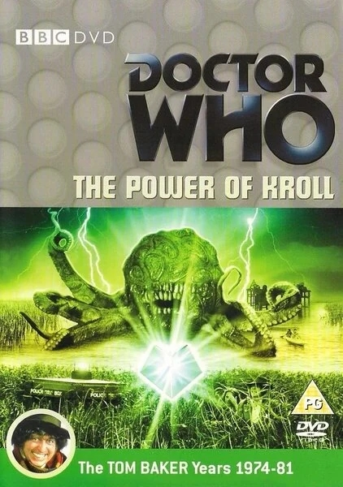
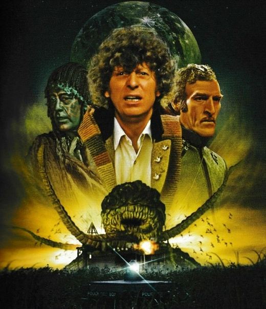

Субтитры: Русские и Английские |  |
|---|---|
с фанатским обновлением визуальных эффектов (cunningmunki) Субтитры: Русские и Английские |  |
The Power of Kroll
Дата выхода: 23 декабря 1978 - 13 января 1979
Формат: 4 эпизода по 25 мин.
|
Пятый фрагмент Ключа Времени ведёт Доктора и Роману на Дельту III — болотистый спутник Дельта Магны, где земная колония добывает метан, а местные болотники поклоняются Кроллу — гигантскому кальмару, чьё пробуждение грозит уничтожением всем вокруг. Сценарист Роберт Холмс считал эту серию своей самой нелюбимой работой: продюсер потребовал гигантского монстра и поменьше юмора. Серия примечательна крупнейшим монстром за всю историю сериала на тот момент — и тем, что К-9 в ней отсутствует, а Джон Лисон, его голос, появляется в роли человека.
 VHS - июнь 1995 |   DVD+Boxset - 24 сентября 2007 * Версия в нашей группе |
|---|
